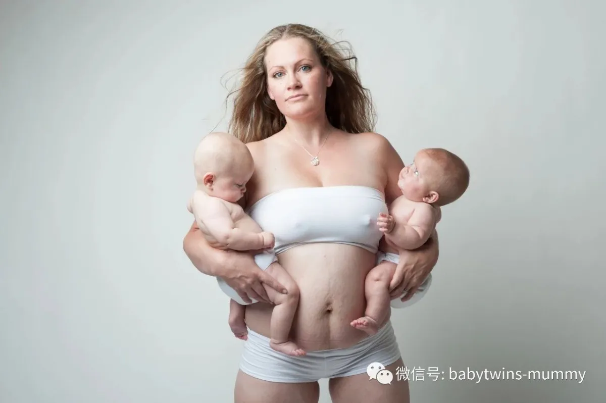

来这里找志同道合的小伙伴！
文|圆圈妈 图片|来自网络
双胎囧事
最近，双胞胎爸爸应该都罢工了吧，
看那架势简直拿世界杯当宝贝了。
好在圆圈爸另类，
他分不清品牌包包在哪个档位更加搞不清
世界杯有没有中国队！
今日有空吐槽下
圆圈妈从怀孕到生娃的囧人囧事。
1
孕期第一次B超，B超室
“主任，我今天中奖了，是两个胎心胎芽啊。”一个年轻女医生惊叫了下。
同时惊叫的人还有我。我是直接从床上弹起来的（那时候还身轻如燕哈）！尼玛，倒是给我说清楚啥叫“两个胎心胎芽”啊，我没读过书，不懂啊！
最后就是主任过来了，使出“洪荒之力”才把我这个新手孕妇按回床上躺着。完了之后让我自个找门诊医生问。
“双胞胎啊。。。。要不要的啊？”
医生头都没抬，就在病历本上，刷刷地写“鸡肠字”
“要！”
已经七魂掉了六魄的我，很机械性的回答！最后就是医生开了一大袋的黄体酮胶囊，让在家保胎，预防先兆流产！
2
孕早期NT，产科门诊
“双胞胎啊，做B超要交双份钱，那个孩子他们的爸去交下。”
医生依然头都没抬，把单胎的B超单扔到垃圾桶，重新开了张单，然后又“恶狠狠地”在单子上，盖了章“双胎妊娠”
这个“双胎妊娠”的章一直形影不离地在我的母婴手册上，在病历本上，在B超单上，在化验单上。直到生产的时候，还被医生各种恐吓“不要命了嘛，双胎妊娠还敢贫血！”
最后就是刚刚还在嘻嘻哈哈的几个助产士被主刀医生一声令下全部散开去库房紧急备血。
3
孕中期四维，产科B超室
“双胞胎啊，你边上等着，我去叫主任。”
一个护士拿着我的检查单走了，然后就没有然后了。
明明已经给我预约下午2点钟的号了，明明已经系统叫上我的号了，明明我已经按照指示躺在B超室里了。我还是被撵出来了，然后等待所谓的主任做最高级别的胎儿会诊。
这个等待不是很长，也就3个小时而已。
我双胎怎么了。我容易嘛我？
在这艰难的3个小时，我瞪着B超室的门口，看着一波波的孕妇挺着肚子进去了又出来了，拿着B超结果，挽着老公，美滋滋的走了。
我瞪着边上打呼噜正嗨的圆圈爸，怒火中烧大吼
“给我买个B超机，我要自己做！”
4
孕后期保胎，产科爱婴区
“双胞胎啊，哦，33周啦，给点硫酸镁，再来点地塞米松，差不多就剖了吧！”
产科管床医生淡定地说。
打硫酸镁之前，我只是有点肚子发硬，依然鸡巴鸡巴说个不停，打硫酸镁之后，我就奄奄一息了。真怀疑医生给我用错药，那感觉像火烧似的，一口气上不来。
地塞米松是打在屁股上的，我只记得小时候生病去乡镇诊所，那里的医生二话没说就往屁股上扎针。此刻扎针，不为别的，据说是促进胎儿的肺部发育！
看来医生已经要放弃我了，啥时候发动就听天由命了！
5
剖腹产之后，产科病房里
“你这手术谁做的，生完还那么大，不知道的以为里面还有一个漏了，没抱出来。”
手术后第二天，查房的主治医师差异地说。
可不是嘛，隔壁床的产妇也很悻悻然地看着我。每次护士来按肚子，她就无限同情地看着我的肚子。
我知道她那个眼神，确认过了！
是在告诉我，以后可怎么办啊，不能穿比基尼，不能穿露脐装，不能穿热裤。
可怜的双胞胎妈妈啊！这辈子就那样了！
6
剖腹产后，产科病房里
“18床，没啥事还是出院吧，人家单胎妈妈，第三天就出院了。”
已经不知道是第几波护士过来催出院了。
我知道了！走廊外不知道啥时候哗啦一下子多了很多待产的孕妇。还有很多经常往病房里探头探脑找床位的家属。已经有好几个大婶大妈问我啥时候出院了！
那时，我还术后高血压，还发烧呢，去新生儿科探视圆圈，才百来米远，还要坐轮椅。我壮着我是双胎产妇，硬着头皮住了6天，终于被护士和其他家属“前拥后簇”欢送出院了！
那天还下着大雨，圆圈还在新生儿科观察，不能出院。来接我的出租车司机嚷嚷着：“这下雨天的，孕妇就不要出门了，还跑医院做啥子？”
是啊，按道理，我这会还是个孕妇呢，只不过圆圈提前一个月出来了！
7
月子中，深圳某城中村里
“我那媳妇不过是剖腹产嘛，好像死了似的，整天整夜只知道在床上睡觉。也不出来看下孩子。”
婆婆那个大嗓门，在楼下跟卖菜大婶唠嗑。
我觉得我是后妈，我居然很庆幸圆圈在新生儿科住了半个月，因为我真的太累了，早上睡到晚上然后继续睡到早上。我觉得天塌下来都不能阻止我要睡觉。
真的多亏圆圈在新生儿科有护士照顾了半个月，我才有喘口气的机会！
圆圈出院的时候，我已经可以自由缓慢行走了，但是依然很累，每天都睡不够！不管圆圈怎么哭得撕心裂肺，我都无动于衷，一点反应都没有。反正不用我喂奶，我也确确实实起不来。
留得青山在不怕没柴烧，睡吧睡到天昏地暗吧！
难怪婆婆说我跟死了似的。这一点都不为过，我是直到出月子之后，我才觉得元神在一点点地归位了！
8
出月子，某社康医院
“哎呀妈呀，这到底谁是谁啊，本来就穿的一模一样，连名字也要整那么像。”
防疫站的小护士看着疫苗本，一脸不耐烦。
对于哥俩的名字，我也是捶胸顿足，悔恨不已。真是孕傻模式开启的节奏。
一个“政”一个“致”写潦草一点都分不清。
我核对他们的疫苗本，核对了三遍。还让公公婆婆各自核对三遍。
不作死就不会死，说的就是我吗？
9
产后40天，产后复查
“你这肚子，咋弄成这样啊，从肚脐眼一直黑到耻骨。比柚子皮还丑，姑娘真是难为你咯”
一个年纪稍大的产科医生给我内检的时候，无不疼惜地说道。
我的肚子已经被调侃过N次了，已经习以为常了！只好配合着苦笑下!反正我少女时期的身材也不咋滴，平平扁扁。
没奢望过穿比基尼那么大尺度。穿衣装扮也很随意，大T恤一穿，谁看得出来呢？
只能这样安慰自己了！
10
产后50天，某公交车上，
“那看手机的小伙子，快给你边上那个孕妇让座。”
司机着急地冲着刚上车的我大喊。
这是产后最囧的一次了，我拎着两罐奶粉，跳上一辆公交车.那会儿走路姿势还没调整过来，外加肚子还没收缩完毕，俨然一个大肚婆走路的样子。
可能就冲这一点吧，司机在我上车那一刻就跟我确认了下眼神。然后就很心神领会地为我争取座位。
那小伙子看着我的肚子，羞答答地往后边找位置了。我骑虎难下，坐还是不坐呢？
我看到后视镜司机那鼓励的眼神！
天啊。深圳的司机蜀黍怎么都那么热心啊！
我发誓，这一趟公交车简直是如坐针毡。
到站之后，我拔腿就跑，做贼似的生怕被识破。我是个假孕妇。可是我明明很光明正大的呀。
11
圆圈90天，深圳北站大草坪
“哇，双胞胎啊。好可爱哦！咦，好像长得不一样啊。”
圆圈第一次大庭广众下亮相，被一群路人围观。
也只有这个时候，我才觉得双胞胎貌似还有点好处。
走到哪都会有很多双眼睛跟到哪，还能听到很多赞美之词。
这种明星般的待遇恰到好处地弥补了我那颗粗俗的虚荣心。
12
圆圈半岁，某理发店
“姐，你心可真大啊，怀孕了还敢剪头发，我们老家啊规矩可多了，怀孕期间不能剪头发，说是会亵渎到胎儿。”
理发店小伙子拿着剪刀，一脸犹豫地看着我和我的肚子。
“没事，小伙子，从姐肚子里出来的两个娃已经半岁了，这会肚子里的都是肥肉，没别的了。你剪吧！”
经历过上一次的“公交车让座”事件，我已经默默地接受这个残酷的现实了。处理这种尴尬事件已经信手拈来，脸不红心不燥了。
13
圆圈1岁，深圳某儿童摄影店
“这个套餐只能一个孩子出镜，两个孩子要拍双份套餐的哈！呵呵”
摄影店的店员对团购劵上的优惠活动卖力地解释着。
又是双份的钱！
我滴勒个天呐，我生个对双胞胎，就招谁惹谁了！
14
圆圈1岁半，深圳某早教机构
“双胞胎啊，可是我们已经是最优惠的价格了，没得打折哦，一个月5000，加上伙食费600，也才5600一个月啊，不是很贵啊！”
“刚店长说了，三个孩子以上，可以打9.5折。”
我#￥%……，欺负我不是三胞胎，让我上哪弄第三个孩子啊！
15
圆圈2岁半，深圳某幼儿园报名
“双胞胎啊，哎呦，一个学期得万把块钱哦。怎么养得起哦！”
说话的是一个跟我一起报名的大婶。她那一身珠光宝气的行头和我身上那套洗得发白还冒牌的阿迪运动套装形成鲜明的对比。
难怪她会替我喊穷！
算下来，圆圈读完幼儿园6个学期，应该保守估计10万块吧！
没事，小意思。他们刚出生在新生儿科那半个月都差不多10万了！这幼儿园算便宜了！
我抛给那个大婶一个放心的眼神，但给自己一个苦涩的笑脸。
路漫漫其修远兮，吾将上下而求索
套用屈原的《离骚》第97句。应下节日！也是对双胞胎妈妈的一个鼓励！
最后祝
双胞胎妈妈们，粽子节快乐！
双胞胎爸爸们，世界杯+父亲节快乐！
作者简介：圆圈妈，资深屌丝女+腐女一枚，家有孖仔男两枚。
微信公众号ID：babytwins-mummy 孖仔帮
个人博客：双胞胎萌娃会（www.sgguy.com）
一个专注双胞胎群体的网站，面向家长，每天分享亲子养育知识
目前孖仔帮建立了微信群
孖仔帮双胞胎孕期群&孖仔帮双胞胎养育群
家长们可以根据需要进入任意一个群
想要进入孖仔帮的微信群
可以加圆圈妈的微信。
由圆圈妈邀请入群
欢迎加入双胞胎大家庭
让我们一起学习成长，快乐育儿！
点击下方“阅读原文”查看更多
